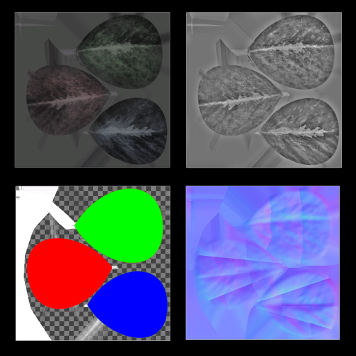
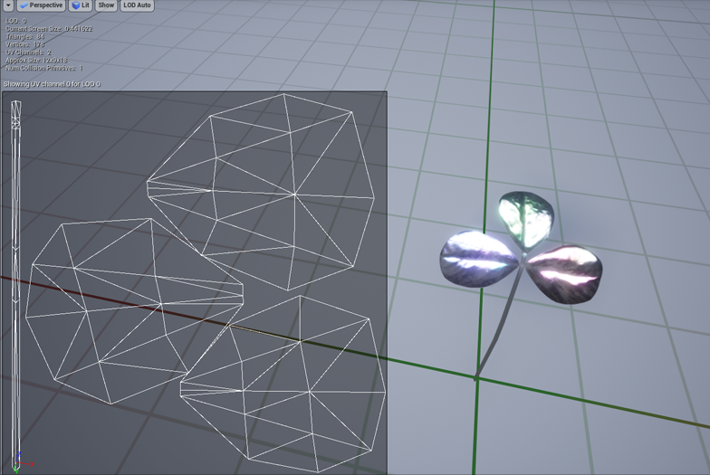
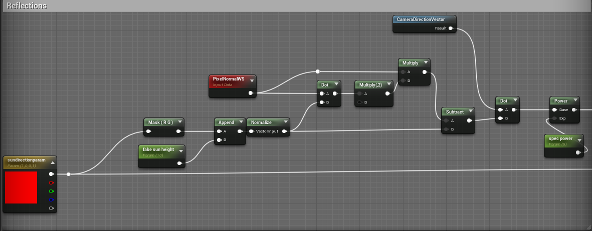
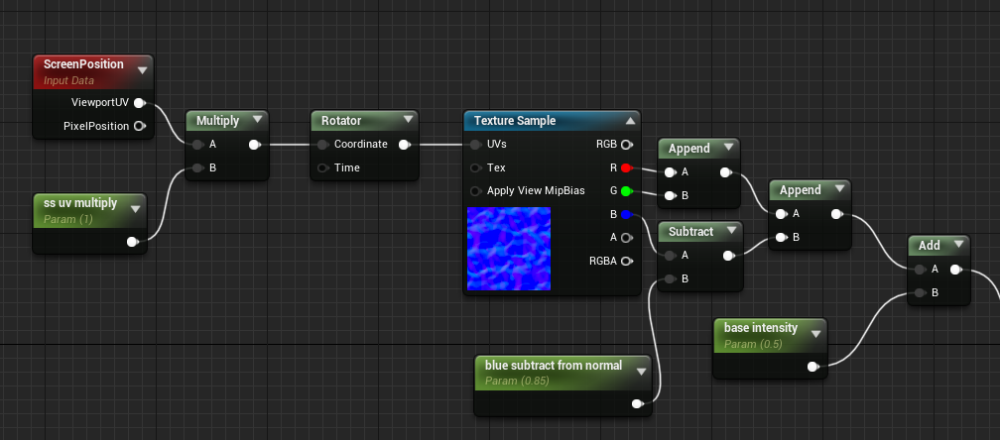

Textures have been made using Photoshop and Substance alchemists ability to generate normal and roughness maps.
A custom emission channel was made in photoshop

The model was made and unwrapped in Blender

The Shader uses a Surface, Default Lit Model with a Masked Blend Mode to round out the corners on the clover.
Reflection calculations are shown below. They are later multiplied with the emission map to give the clover glow

The code bellow calculates the distance of every pixel from an imaginary line spanning between the camera and the sun
abs( lightdir.x*worldpos.y - lightdir.y*worldpos.x + camerapos.x*(camerapos.y + lightdir.y) - camerapos.y*(camerapos.x + lightdir.x) );
Lastly I added a texture that rotates in screenspace to add the mesmerizing light effect
